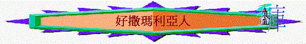

經文:路10:25-37
引言:
路10:25題及律法師,從他的稱呼,你會想像他專長什麼?
他在10:25-28問主什麼問題?
主又反問他什麼? 從他的對答中顯示他有什麼強處?
但他又有什麼問題? 10:28及10:37中主重覆了兩次什麼事情?
這反映那律法師最大的問題是什麼?
你認為自己由細至大,聽真理的事情多不多?
但主看重我們是否單是知很多真理?
此段聖經的重點主要人行什麼真理?10:27-28 誰是我們的鄰舍?
讓我們從聖經中的比喻中學習行出愛鄰舍的真理
一.人的困境
1.10:30
有一個人遇到什麼問題?
他有什麼困境?
失去一些東西
肉身上受痛苦
生命出現危機
處境上得一人(孤單及無助)
2.最近,有沒有遇個一些人有以上類似困境(失去…痛苦…危機….孤單….)
二.祭司與利未人的反應
1.10:31-32
出現什麼人?
他們有什麼反應?
2.祭司是誰?
利未人是誰? 與其他人有什麼分別?
他們對那個人的反應令我們有什麼驚訝的地方?(有真理知識,有事奉身份,作眾人榜樣,不是看不見人的需要…..竟然見死不救)
3.假設你是祭司與利未人，請為自己見死不救找些理由
例如：那人我不識,不關我事,很麻煩,我身份不是做這些事,有血我不沾染,會有其他人幫,太忙碌？害怕伸出援手？自掃門前雪？怕沾到不潔？
4.有沒有以上的經歷?
曾幾何時， 你也像祭司與利未人一樣，『偶然』遇上有需要幫助的人，卻見死不救嗎?為甚麼呢?
身份地位?面子?別多管閒事?心灰意冷?自己都顧不掂，別說幫人?
三.
撒瑪利亞人的榜樣
1.10:33-35又提到什麼人?
撒瑪利亞人是什麼人?
2.他與之前二人有什麼不同的回應?他做了什麼事情?
3.你猜想撒瑪利亞人是否很空閒,沒什麼事做?
若你是撒瑪利亞人，你會幫傷者幫到那個程度呢？
4.
撒瑪利亞人與那一個人有什麼關係?若那人是猶太人,猶太人和撒瑪利亞人的關係如何?
按人的常理,撒瑪利亞人可不可以不幫他?
從此我們學到什麼真理?
5.在日常生活中,我們通常想幫的是什麼人/鄰舍?
從撒瑪利亞人我們學到什麼真理?
6.路10:35耶穌最後叫律法師作什麼事情? 你今天又可以如何在生活中行出以上真理?